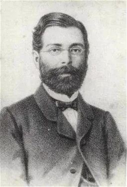

Publicações
Antecedentes históricos
O principal fato histórico que permeia o Romantismo no
Brasil é a chegada da Família Real portuguesa, em 1808.
Nesse período, o país deixou oficialmente de ser uma
colônia de exploração e passou a ser a sede do Reino
Unido de Portugal, Brasil e Algarves. Com isso, uma
série de modernizações começou a ocorrer no país.
Algumas das principais delas são:
- Criação da imprensa brasileira;
- Construção do Museu Nacional (incendiado em 2018);
- Fundação do Banco do Brasil;
- Decreto de abertura dos portos às nações amigas;
- Criação do Ministério da Marinha, das Relações
Exteriores e do Tesouro Nacional, assim como a
fundação da Casa de Suplicação do Brasil (atual
Supremo Tribunal da Justiça).

Fatores históricos decisivos
O Romantismo é um estilo de época.
Apesar de ter surgido na Alemanha, o fato histórico
que motivou o aparecimento desse movimento artístico
foi a Revolução Francesa, um acontecimento importante
para toda a Europa. Ele é caracterizado pelo
subjetivismo, excesso sentimental, idealização e
fuga da realidade.
O marco histórico do Romantismo é a Revolução
Francesa (1789-1799). A partir dela, a burguesia
passou a ter grande poder político e a aristocracia
entrou em decadência. Dessa forma, a estética
romântica é também burguesa, pois reflete os ideais
e costumes dessa classe social.
O lema dessa revolução era “Liberdade, igualdade,
fraternidade”. E inspirou os artistas românticos,
principalmente no que diz respeito à liberdade. Os
artistas passaram a enaltecer a liberdade de
pensamento, de comportamento e, inclusive, a
liberdade de amar. Isso, no entanto, ia de encontro
ao conservadorismo burguês.
Nos primeiros anos do século XIX, Napoleão
Bonaparte (1769-1821) empreendeu grande esforço
para expandir o império francês. Em países como
a Alemanha, as invasões napoleônicas acabaram
despertando o sentimento de nacionalidade, uma
das principais características do Romantismo
em sua origem.
Romantismo: A arte burguesa
O Romantismo, iniciado no século XIX, era um movimento que
exaltava a emoção, a natureza e a individualidade,
frequentemente alinhado com os valores e sentimentos da
burguesia. Por sua vez, a arte burguesa refere-se a formas
de arte que emergiram, foram promovidas ou amplamente
consumidas pela burguesia, a classe média que ganhou
proeminência econômica e social a partir do final da Idade
Média e especialmente durante a Revolução Industrial.
Características românticas
O Romantismo trouxe importantes contribuições culturais, especialmente
na literatura, onde se destacou a ênfase na emoção e subjetividade,
a valorização da liberdade artística e individual, a exaltação da
natureza, a idealização do amor e da mulher, e a busca pela
identidade nacional através da valorização da história e cultura
locais. A linguagem tornou-se mais acessível, aproximando-se do
cotidiano. Em outras áreas, como as artes plásticas, houve o uso
de cores vibrantes e temas nacionalistas, enquanto na música as
composições tornaram-se emotivas e dramáticas.
Aspecto estilístico
Imaginismo:
O Romantismo valorizava a imaginação e a fantasia, o que se refletia em uma linguagem rica em metáforas, alegorias e outras figuras de linguagem que evocavam imagens vívidas e emocionantes.
Subjetivismo:
Os românticos enfatizavam a experiência individual e subjetiva, o que se traduzia em uma linguagem mais pessoal e introspectiva.
Emoção e sentimentalismo:
O Romantismo celebrava a emoção e o sentimentalismo, o que se refletia em uma linguagem mais emotiva e sensível.
Natureza e paisagem:
A natureza era um tema central no Romantismo, e os escritores e artistas frequentemente utilizavam a paisagem para evocar emoções e ideias.
Misticismo e irracionalismo:
O Romantismo também se caracterizava por uma fascinação pelo misticismo e pelo irracional, o que se refletia em uma linguagem mais simbólica e sugestiva.
Contribuições culturais

O Romantismo trouxe importantes contribuições culturais, especialmente na literatura, onde se destacou a ênfase na emoção e subjetividade, a valorização da liberdade artística e individual, a exaltação da natureza, a idealização do amor e da mulher, e a busca pela identidade nacional através da valorização da história e cultura locais.
A linguagem tornou-se mais acessível, aproximando-se do cotidiano.
Em outras áreas, como as artes plásticas, houve o uso de cores vibrantes e temas nacionalistas, enquanto na música as composições tornaram-se emotivas e dramáticas.
Romantismo no Brasil (1836-1881)
O Romantismo no Brasil foi um movimento
literário que reuniu uma produção muito
rica de textos poéticos, teatrais e romances.
Teve como marco inicial a publicação do livro
de poemas "Suspiros poéticos e saudades", de
Gonçalves de Magalhães (1811-1882), em 1836.
Além dessa obra, a Revista Niterói, publicada
nesse mesmo ano em Paris, também foi precursora
do movimento.
O Romantismo no Brasil se caracterizou, num primeiro
momento, pela busca da identidade nacional e
resgate das tradições e valores da cultura popular
e do folclore. Temas como o indígena, a exaltação
da natureza, os regionalismos e a realidade social
do país são muito explorados pelos autores românticos.
Com a Independência do Brasil, em 7 de setembro de 1822,
os escritores desse período buscam a autonomia da
literatura, retomando diversos aspectos da cultura
brasileira. Isso porque durante séculos de colonização,
o Brasil sofreu forte influência dos modelos europeus,
sobretudo de Portugal.
Alguns escritores que tiveram grande destaque no Romantismo no Brasil foram:
- Castro Alves
- Casimiro de abreu
- José de Alencar
- Gonçalves Dias
- Gonçalves de Magalhães
- Manuel Antônio de Almeida
1ª Geração romantica (1836-1852)
A Primeira Geração Romântica Brasileira surgiu no contexto histórico colonial, marcado pela chegada da Família Real Portuguesa ao Brasil em 1808. Essa mudança trouxe grandes transformações sociais implementadas por Dom João VI, que estabeleceu o Reino Unido de Portugal e Algarves, elevando o Brasil à condição de reino. Esse período viu o enfraquecimento do pacto colonial e a disseminação de ideias iluministas, como a Revolução Francesa e a Independência das Treze Colônias. A presença dos portugueses gerou insegurança entre os cidadãos brasileiros, mas também fomentou o nacionalismo e a valorização da identidade cultural do Brasil. As primeiras obras românticas buscaram exaltar os povos nativos e desenvolver uma identidade cultural brasileira, distinta da influência portuguesa. Esse movimento literário também se relacionou com o Processo de Independência do Brasil, culminando com a declaração de independência por Dom Pedro I em 7 de setembro de 1822.
2ª Geração romantica (1853-1869)
As obras da Segunda Geração Romântica Brasileira, situadas entre 1853 e 1869, surgiram após o período nacionalista da Primeira Geração. Apesar da Independência do Brasil em 1822, o processo foi conservador, mantendo estruturas sociais e hierárquicas. Isso levou a um ceticismo em relação às ideias iluministas e nacionalistas. A Segunda Geração Romântica se afastou desses ideais, adotando uma postura subjetiva e pessimista, influenciada pelo poeta inglês Lord Byron. Esse distanciamento das questões sociais e políticas fez com que os poetas dessa geração fossem mal vistos, sendo chamados de geração do "mal do século" ou "Geração Byroniana".
3ª Geração romantica (1870-1881)
A Terceira Geração Romântica no Brasil, que se desenvolveu entre 1870 e 1880, ocorreu em um período de crescimento econômico impulsionado pela produção de café, que utilizava mão de obra escrava. Nesse contexto, os poetas dessa geração criticaram as práticas políticas e sociais, especialmente a escravidão. Conhecida como Geração Condoreira, essa corrente literária simbolizava a luta pela liberdade, inspirada pelo autor francês Victor Hugo, que também abordava críticas sociais em suas obras. Devido à influência de Hugo, a Terceira Fase do Romantismo brasileiro também é chamada de "Geração Hugoana."
Prosa no Romantismo
A prosa romântica é um dos mais importantes gêneros literários
que fora desenvolvido no século XIX, destacando-se por enfatizar
a emoção, o individualismo e a exploração dos sentimentos
humanos. A prosa não faz parte das gerações românticas, possuindo
quatro tipos, sendo eles:
- Indianista - Nacionalismo, construção da identidade nacional, a qual tem o índio como elemento da formação do povo brasileiro;
- Histórico - É o passado mais recente, sendo a história do Brasil narrada de forma idealizada;
- Regionalista - Interior do Brasil, sociedade patriarcal e rural que possuem diferentes valores da urbana, detendo como herói um homem rude que enfrenta as dificuldades do espaço em que vive.
- Urbana - Histórias sobre a corte, representação dos costumes da elite burguesa, tendo um herói ou heroína que enfrenta obstáculos para encontrar a felicidade
Os principais escritores de Prosa foram: Joaquim Manuel de Macedo e
Manuel Antônio de Almeida na fase urbana, Franklin Távora e Bernardo
de Guimarães na época regionalista e José de Alencar que se fez
presente em todas as épocas com suas obras românticas e nacionalistas.
Tipos de romance

Monofônico:
O foco narrativo está sobre uma personagem, o protagonista.
Polifônico:
O foco narrativo está sobre várias personagens, concede o protagonismo a várias personagens.
Fechado:
O narrador fornece todas as informações, não deixa espaço (abertura) para a imaginação dos leitores.
Aberto:
Nem tudo é expresso, o narrador deixa lacunas a serem preenchidas pelos leitores.
Linear ou Progressivo:
Os acontecimentos que formam o enredo são mais importantes do que a reflexão.
Vertical ou analítico:
A ação é auxiliar, no contexto geral da obra, pois o principal objetivo é refletir sobre o impacto dessa ação nas personagens.
Psicológico:
Está centrado no funcionamento da mente humana, nos pensamentos do narrador ou das personagens, na forma como eles entendem o mundo exterior.
É caracterizado, portanto, pela análise psicológica e pelos fluxos de consciência.
Assim, ao contrário do romance vertical ou analítico, ele não está condicionado à ação, pois a reflexão, a análise está voltada para o mundo íntimo, os sentimentos e memórias do narrador ou personagens.
Principais autores e obras
José de Alencar

José de Alencar (1829-1877) foi um romancista, dramaturgo, jornalista, advogado e político brasileiro.
Foi um dos maiores representantes da corrente literária indianista e o principal romancista brasileiro da fase romântica.
Entre seus romances destacam-se "Iracema" e "Senhora".
Seu romance "O Guarani", publicado em forma de folhetim, no Diário do Rio de Janeiro, alcançou enorme sucesso e serviu de inspiração ao músico Carlos Gomes que compôs a ópera O Guarani.
Foi escolhido por Machado de Assis para patrono da Cadeira n.º 23 da Academia Brasileira de Letras.
O Guarani
De forma idealizada, esse romance conta a história de amor entre Ceci (filha de um colonizador) e Peri (indígena brasileiro).
Com esse relacionamento inter-racial, o narrador cria a ideia de que o povo brasileiro é fruto do amor e da harmonia entre portugueses e indígenas.
Junqueira Freire

Junqueira Freire (1832-1855) foi um poeta brasileiro. Fez parte da geração de poetas que mais se destacaram na segunda fase do Romantismo. É patrono da Cadeira n.º 25 da Academia Brasileira de Letras.
Luís José Junqueira Freire nasceu em Salvador, Bahia, no dia 31 de dezembro de 1832. Cursou o Liceu Provincial de Salvador. Com 19 anos, inconformado com os problemas que o cercavam resolveu se refugiar na vida religiosa entrando para o Mosteiro de São Bento.
Inspirações do Claustro
Em 1855, Junqueira Freire escreveu “Inspirações do Claustro”, o testemunho das experiências pessoais vividas no convento, cheias de dúvidas e ilusões. Seus versos condenam as disciplinas religiosas e os votos de obediência.
Seu poema mergulha fundo em seu mundo interior e fala constantemente da morte, da angústia, da solidão, da melancolia da vida e dos desenganos amorosos, uma tendência da 2ª Geração Romântica, também chamada de Ultra- Romantismo, que também se destacaram Álvares de Azevedo e Casimiro de Abreu.
Castro Alves

Castro Alves (1847-1871) foi um poeta brasileiro, representante da Terceira Geração Romântica no Brasil. "O Poeta dos Escravos" expressou em suas poesias a indignação aos graves problemas sociais de seu tempo. É patrono da cadeira n.º 7 da Academia Brasileira de Letras.
Antônio Frederico de Castro Alves nasceu na vila de Curralinho, hoje cidade de Castro Alves, Bahia, em 14 de março de 1847.
No dia 7 de outubro, provou o gosto da morte. Uma dor no peito e uma tosse incontrolável o fez lembrar, da mãe e dos poetas que morreram com a doença (tuberculose). No ímpeto, escreveu “Mocidade e Morte”.
Castro Alves faleceu em Salvador, no dia 6 de julho de 1871, vitimado pela tuberculose, com apenas 24 anos de idade.
Sua poesia é classificada como “Poesia Social”, que aborda o tema do inconformismo e da abolição da escravatura, através da inspiração épica e da linguagem ousada e dramática como nos poemas: Vozes d’África e Navios Negreiros, da obra Os Escravos (1883), que ficou inacabada.
O navio negreiro
O navio negreiro, de Castro Alves, é um longo poema abolicionista escrito pelo autor em 1868. Ele é dividido em seis partes e possui características românticas, como o uso intenso de exclamações e hipérboles.
Além disso, mostra o sofrimento dos africanos escravizados, em um navio negreiro, rumo ao Brasil, país que descumpria a lei que proibia o tráfico de escravos.
Vídeo
Referências bibliográficas
- Antecedentes históricos:
- https://brasilescola.uol.com.br/literatura/romantismo-no-brasil.htm#:~:text=do%20Romantismo%20brasileiro-,Contexto%20hist%C3%B3rico%20do%20Romantismo%20no%20Brasil,de%20Portugal%2C%20Brasil%20e%20Algarves
- Fatores históricos decisivos:
- https://brasilescola.uol.com.br/literatura/romantismo.htm#:~:text=O%20marco%20hist%C3%B3rico%20do%20romantismo,e%20costumes%20dessa%20classe%20social.
- Romantismo: A arte burguesa:
- https://www.portugues.com.br/literatura/oromantismobrasileiro.html
- https://promilitares.com.br/concursos-militares/conteudo/romantismo-a-prosa-romantica/
- Características Românticas:
- https://brasilescola.uol.com.br/literatura/romantismo.htm
- Aspectos estilísticos:
- https://www.portugues.com.br/literatura/romantismo.html
- Contribuições Culturais:
- https://brasilescola.uol.com.br/literatura/romantismo.htm
- Romantismo no Brasil:
- https://www.todamateria.com.br/romantismo-no-brasil/#:~:text=O%20romantismo%20no%20Brasil%20se,muito%20explorados%20pelos%20autores%20românticos
- Prosa no Romantismo:
- https://www.infoescola.com/literatura/romantismo/#a-prosa-romantica-da-primeira-geracao
- Tipos de Romance:
- https://mundoeducacao.uol.com.br/literatura/romance.htm
- Principais obras e autores:
- https://www.todamateria.com.br/obras-e-autores-do-romantismo/
- https://www.ebiografia.com/jose_alencar/
- https://brasilescola.uol.com.br/literatura/o-guarani.htm
- https://www.ebiografia.com/junqueira_freire/
- https://ebiografia.com/castro_alves/
- https://brasilescola.uol.com.br/literatura/castroalves.htm